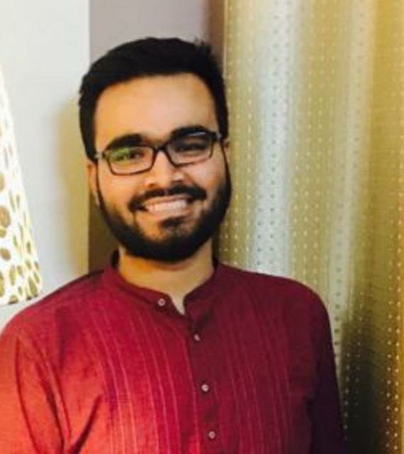

University of Southern California
Los Angeles, CA
Hi! I am a Master's student in Computer Science at the University of Southern California. I am currently a Research Assistant in the Learning and Interactive Robot Autonomy (LIRA) Lab, advised by Prof. Erdem Bıyık, where I build multimodal datasets that pair human eye gaze with screenshots and actions to train vision-language computer-use agents.
I also work with Karen Green and Prof. Shon Hiatt at the USC Zage Business of Energy Initiative, part of the USC Marshall School of Business, on multi-agent LLM systems for stakeholder negotiation. In Summer 2026, I was an ML Research Intern in the IRT Lab at the AI Institute, University of South Carolina, with my mentor Vedant Khandelwal and advisor Prof. Amit Sheth, where I worked on neurosymbolic reinforcement learning with knowledge graphs and language models.
Before graduate school, I spent three years as a Software Engineer at Shell, building cloud integrations on Azure and leading an Azure OpenAI retrieval-augmented assistant prototype. I received my B.Tech in Computer Science & Engineering from Amity University, India.
Research Interests. Broadly, I am interested in building intelligent agents that can perceive, reason, and act reliably in the real world, and in the systems that make such agents practical to train and deploy. My work sits at the intersection of machine learning, robotics, and computer systems. On the learning side, I study how agents connect what they see and read to what they do, and how they can keep behaving correctly as their goals and surroundings change. On the systems side, coming from a software engineering background, I care about making these models efficient and scalable, from large GPU clusters down to small edge devices.
Some of the directions I am currently excited about:
- Embodied AI & Robot Learning — teaching robots to turn vision and language into skilled physical action, and understanding what makes these policies generalize.
- Trustworthy & Adaptive Agents — multimodal and language-model agents that learn from people, follow rules, and stay safe and interpretable when requirements shift.
- Efficient & Scalable ML Systems — parallel and distributed computing, high-performance inference, and model compression that let these agents run fast and at scale.
I'm always happy to talk about research — feel free to reach out.